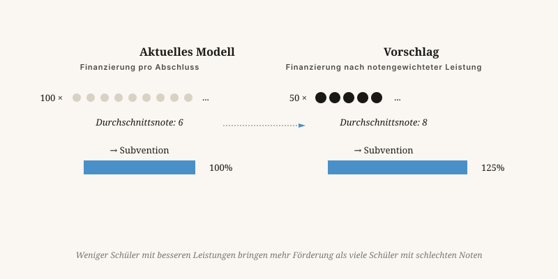

Von der Lernfabrik zur Lernwerkstatt
Eine Schule, die hundert Sechsen liefert, erhält heute mehr Geld als eine Schule, die fünfzig Achten liefert. Das ist das Problem.
Von Jacobus van Merksteijn · 9 Min. Lesezeit · 23. Mai 2026

Die Lernwerkstatt — wo Talent und Motivation zusammenkommen
Wir finanzieren die Anzahl, nicht die Qualität
Wir finanzieren Schulen nach der Anzahl der Abschlüsse, die sie liefern. Also liefern sie Abschlüsse — nicht notwendigerweise gebildete Menschen. Das ist keine Grausamkeit der Lehrer. Es ist ein eingebauter Anreiz, der sich von selbst in niedrigere Standards, einfachere Prüfungen und immer mehr „Lernpfade" für diejenigen übersetzt, die eigentlich nicht für das Niveau geeignet sind.
Das Problem in einem Satz
Wer Schulen an der Anzahl der Absolventen misst, bekommt Absolventen. Wer sie an gebildeten Menschen misst, bekommt gebildete Menschen.

Vier konkrete Reformen
Warum das mit dem 7D-Denken übereinstimmt
Maßstabsgesetz im Klassenzimmer
Bildung skaliert schlecht. Was in einer Klasse von fünfzehn funktioniert, scheitert in einer Klasse von dreißig. Das ist kein Verwaltungsproblem — das ist ein Naturgesetz. Ein Lehrer kann einer begrenzten Anzahl von Menschen gleichzeitig Aufmerksamkeit schenken.
Wert, der erst später sichtbar wird
Ein guter Lehrer verändert ein Leben, und diese Veränderung kommt erst Jahrzehnte später in Wohlstand oder Wohlbefinden zum Ausdruck. Politik, die nur auf kurzfristiges Geld setzt, sieht diesen W-Wert nicht.
Freiheit als Motor
Bildung braucht Vielfalt: verschiedene Schulen, verschiedene Methoden, keine Monokultur. Ein einheitlicher Lehrplan für 7.500 Grundschulen ist eine Nivellierungsmaschine.
Ist das elitär?
Menschen werden sagen: Sie schließen Kinder aus. Meine Antwort ist, dass ein ehrlicher Spiegel das Gegenteil von Ausschluss ist.
Wer heute ein Diplom erwirbt, hinter dem wenig steckt, wird später trotzdem ausgeschlossen — auf dem Arbeitsmarkt, in einer Ausbildung, die er nicht bewältigt, in einem Leben, das nicht zu ihm passt. Das ist grausamer als rechtzeitig zu sagen: das ist nicht Ihr Weg, schauen Sie hier.
Bildung ist kein Sozialsystem. Sie ist ein Instrument, das Menschen zu sich selbst werden lässt. Das gelingt nur mit ehrlichen Maßstäben.
Von der Lernfabrik zur Lernwerkstatt
Eine Schule, die hundert Sechsen produziert, erhält mehr Geld als eine Schule, die fünfzig Achten produziert. Das ist das Problem.
Wir finanzieren Schulen nach der Anzahl ausgestellter Abschlüsse. Also stellen sie Abschlüsse aus — nicht notwendigerweise gebildete Menschen. Das ist keine Grausamkeit der Lehrer. Es ist ein eingebauter Anreiz, der sich von selbst in niedrigere Standards und immer mehr „Lernwege" für jene übersetzt, die für das Niveau eigentlich nicht geeignet sind.
Vier konkrete Reformen: Finanzierung nach dem durchschnittlichen Abschlussniveau statt nach der Bestehensquote; strengere Zulassung, damit Motivation und Talent zusammenkommen; Abkehr von staatlich finanzierter Kinderbetreuung in den ersten sieben bis zehn Lebensjahren zugunsten häuslicher Elternunterstützung; und die Anerkennung, dass ein hervorragender Klempner mehr gesellschaftlichen Nutzen schafft als ein mittelmäßiger Verwaltungswissenschaftler.
Ist das elitär? Ein ehrlicher Spiegel ist das Gegenteil von Ausgrenzung. Wer jetzt einen Abschluss erhält, hinter dem wenig steckt, wird später auf dem Arbeitsmarkt dennoch ausgeschlossen. Das ist grausamer als rechtzeitig zu sagen: Das ist nicht Ihr Weg — schauen Sie hier.
Das Maßstabsgesetz im Klassenzimmer
Bildung skaliert schlecht. Was in einer Klasse mit fünfzehn Schülern funktioniert, scheitert in einer mit dreißig — das ist kein Verwaltungsproblem, sondern ein Naturgesetz. Freiheit für Schulen, anders zu sein, ist keine Extravaganz, sondern die einzige Garantie, dass Neues entstehen kann. Ein einziger ministerieller Lehrplan für tausende Grundschulen ist eine Nivellierungsmaschine.